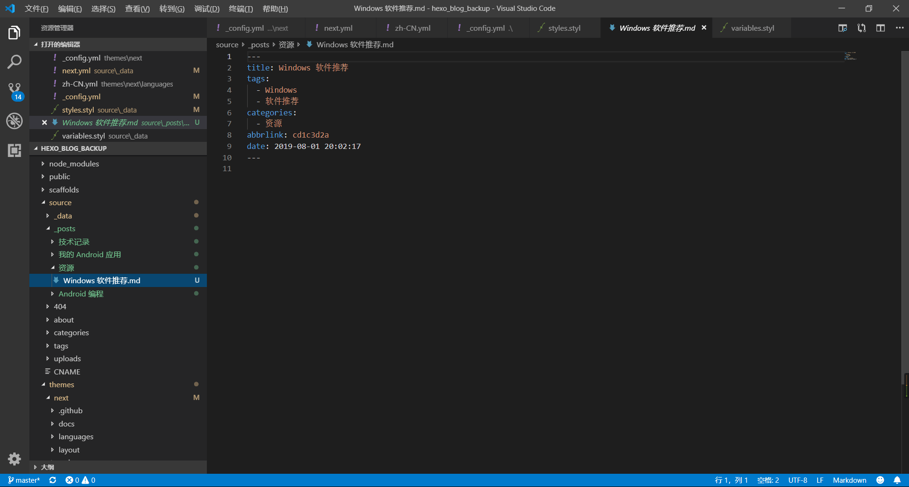
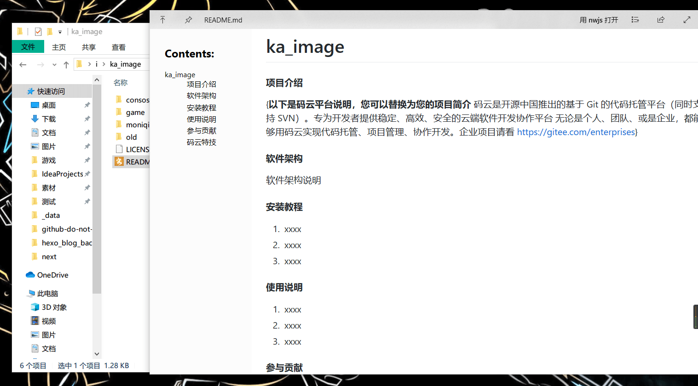
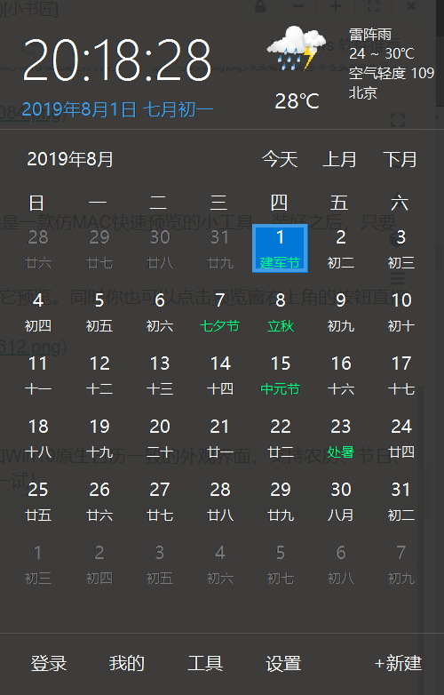
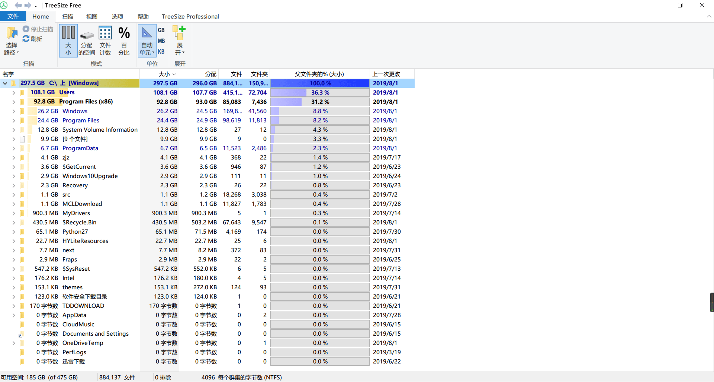
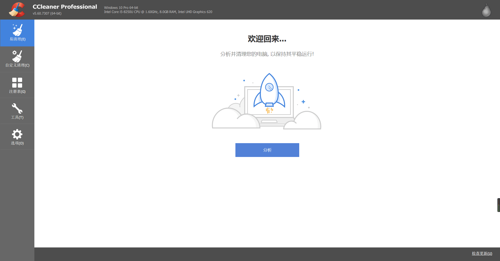
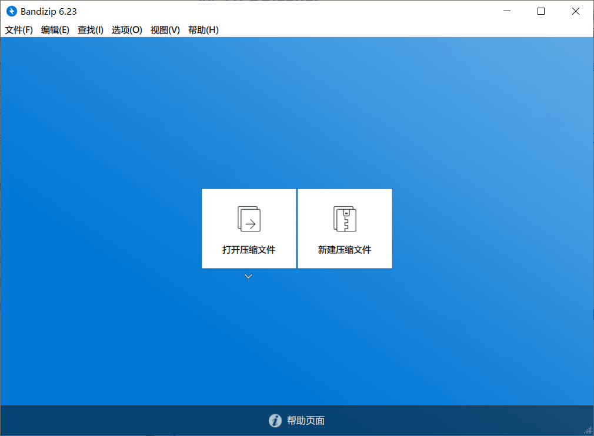
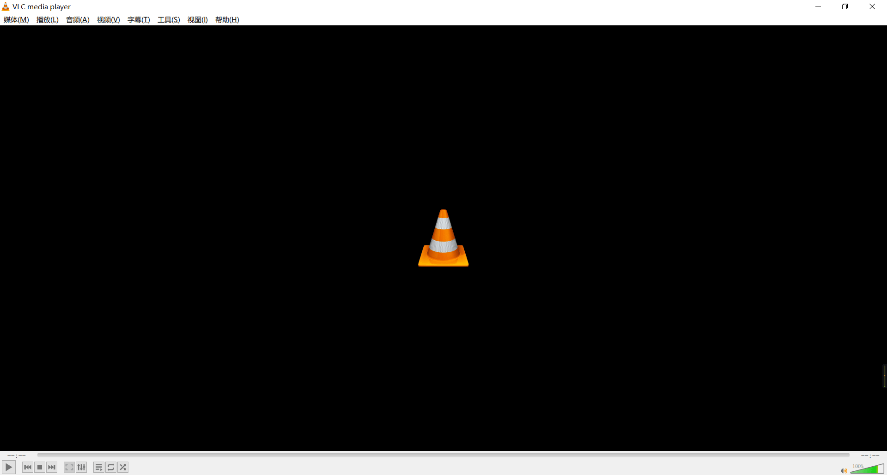
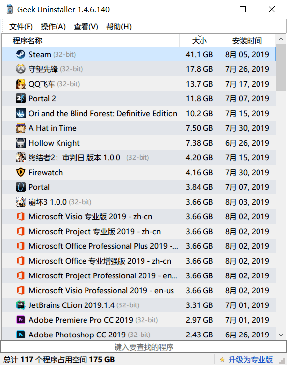

这些软件都是我自己用过的，可以通过左边页面快速定位
Visual Studio Code
这个简直首推，编辑利器，人生苦短，我用 VS Code 完成关于文本编辑工作的一切。它天生支持几乎所有编程语言，还可以通过扩展个性化相应的语法高亮等。 如果你想忙里偷闲，VS Code 强大的扩展能力还能让你用它刷 LeetCode 或 V2EX，可谓带薪划水必备。  你可以在官网免费获取 Visual Studio Code。
福昕 PDF 阅读器
国产，中文界面，流畅好用，界面美观 点这里
福昕 PDF 编辑器
福昕（Foxit）可能是我国最受欢迎的 PDF 阅读器，由其出品的 PDF 编辑器 也是 Adobe Acrobat 的有力竞争对手。它提供了各种 PDF 批注工具；支持编辑 PDF 中的文本、段落、图片；设计并填写表单；OCR 识别图片中的文字；管理 PDF 页面；转换为其它文件格式等，界面也比较友好。
火绒安全软件
如果你觉得 Windows Defender 还是有些简陋，火绒安全软件是个不错的选择。它提供了病毒联网查杀、垃圾清理、下载保护、浏览器保护等国产卫士标配功能，但不会拖家带口向你问好，还你一片清净。 除了系统防护外，火绒安全软件还提供了数种实用工具，如弹窗拦截、右键菜单管理、启动项管理、文件粉碎机等。如果你是进阶用户，还可以试试火绒剑这一强大的专业安全分析工具。  你可以在 官网 免费获取火绒安全软件。
你可以在 官网 免费获取火绒安全软件。
Quicklook，仿 MAC 快速预览
MAC 的快速预览很多人都见过，回望 Win10 的「预览」，依旧被抠抠唆唆地安排在窗口右侧，一点也不大气！QuickLook 是一款仿 MAC 快速预览的小工具，装好之后，只要选中文件，按下键盘上的空格键，即可预览文件内容。
QuickLook 支持文本、视频、音频、图片、压缩包、Office 文档……，换句话说，你电脑上任何一款文件几乎都可以用它预览。同时你也可以点击预览窗右上角的按钮直接启动对应程序，非常方便。  QuickLook：点此下载
升级 Win10 日历！优效日历
Win10 为右下角托盘设计了一个新日历，但依旧被吐槽功能太弱，优效日历是 Win10 原生日历的最佳替代者。它有着和 Win10 原生日历一致的外观界面，支持农历、节日、调休显示，支持日程提醒、万年历、自定义时钟。同时它还集成了定时关机、屏幕截图两大功能，没用过的一定得试一试！  点击下载
Chocolatey
Chocolatey 是 Windows 下的包管理器，访问官网来查看使用方法
uTools
uTools 是一个极简的桌面管理软件，但它的功能更全面。包含：快速启动、自动识别、数据同步等功能。
比如快速启动，这个功能和 Listary、Everything 等都非常相似。但 uTools 对中文的支持非常有好，还可以首字母检索。  除此外还有插件中心，里面还有各种比如：网页快开、在线翻译、计算器、压缩图片、图片转文字等功能。这也是其它快速启动软件所不具备的。
除此外还有插件中心，里面还有各种比如：网页快开、在线翻译、计算器、压缩图片、图片转文字等功能。这也是其它快速启动软件所不具备的。  点击下载
点击下载
万彩办公大师
万彩办公大师可以说是一个办公必备的工具，包含了各种功能：PDF 编辑、格式转换、图片编辑等，功能多达 60+。
最让人惊喜的是，万彩办公大师使用完全免费，所有的工具无需安装，直接加载就可以启动了。 下载地址
TreeSize
TreeSize 是一个扫描磁盘可视化排列大小的应用，有免费版和专业版可以选  点击这里获取免费版
CCleaner
CCleaner，不仅是常用的垃圾和缓存清理，我也用它在电脑刚到手时卸载掉 Win10 自带的各种无用软件（有些 Windows 不让卸载的自带 UWP，在 CCleaner 里可以卸载掉），甚至我嫌 OneDrive 麻烦，也用它卸载过。界面很友好。批量卸载比手动卸载方便不少。软件是有中文的，但默认是英文，自己手动在 options-setting-language 选择 Chinese simplified 即可  点击下载
BandiZip
BandiZip，界面美观，功能强大，而且免费无广告，另外 7-Zip，界面丑了一些，功能还是很强的。也有不少人推荐修改版的 rar 烈火或者好压，其实都不错。  下载地址
Obs-Open Broadcaster Software
OBS，不用多说了，剪视频、录游戏好帮手。 下载地址
VLC media player
跨平台的播放器，Linux 的时候一直用的，Windows 也就接着用了，有浏览器插件，可以直接把浏览器的视频推过来播放  点这里下载
Geek Uninstaller
Geek Uninstaller 是一个专业卸载软件，采取深而快的扫描方式，删除所有无用的文件，注册表，卸载无残留！ 这款软件也是一款单文件软件，下载后，不用安装，双击直接使用，卸载软件、强制彻底清除软件残留垃圾文件或是查看某软件的注册表项目等等。  你可以在他的官网获取到
未完
后面想到了再补充